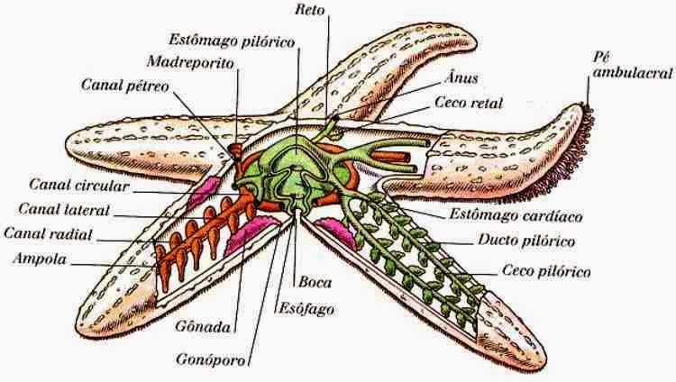

Características Adaptativas
Reino: Animalia
Filo: Equinodermos
Classe: Asteroidea
Ordem: Forcipulatida
Família: Pisaster
Gênero: Pisaster
Encontra-se no Alasca à Baja Califórnia. É mais comumente encontrada no Nordeste do Pacífico, sendo uma espécie de água fria. No entanto, é comum em baías o ano todo.
Adaptações para viver
Pisaster ochraceus pode ser encontrado em costões rochosos banhados por ondas, desde acima da zona de maré baixa até 90 m de
profundidade. Como eles podem viver em águas rasas, eles precisam sobreviver nessas condições de vida, incluindo fortes ondas,
grandes mudanças de temperatura, diluição pela chuva e dessecação.
Obtenção de alimento
Na fase larval,Pisaster ochraceus são filtradores, comendo plâncton.
Características Biológicas

Regulação de água
Como todas as estrelas do mar, um adulto P. ochraceus tem pés tubulares que usam para locomoção e para lidar com presas. P. ochraceus alimenta-se mexilhões,quitoense lapas, que eles lentamente abrem e devoram caramujos,caracóis,equinóides, até decápode crustáceos também são comidos. Ele revira o estômago sobre a presa se for muito grande para ser engolido inteiro e digere a presa antes de engoli-la.
Sistema digestivo das estrelas-do-mar é formado pela boca, que fica na porção inferior do corpo e se fecha com um esfíncter oral, um esôfago pequeno, o estômago com porções pilóricas responsáveis pelo armazenamento e liberação de enzimas digestivas, um intestino curto e o reto, conectado ao ânus que se abre na porção aboral do animal.
Locomoção
A estrela-do-mar se movimenta usando centenas de patinhas tubulares situadas em sua parte inferior. Essas patas parecem pequenas pernas,
e cada uma tem uma ventosa na ponta.
Sistemas do corpo
Sistema respiratório - Papilas respiratórias(compatível com brânquias).
Sistema circulatório - é chamado de hidrovascular. Ele é formado pelos canais ambulacrais, pés ambulacrais e ossículos. A abertura
externa do sistema se dá na parte dorsal do animal pelo madreporito.
Sistema nervoso- é simples e não há cérebro, ou mesmo gânglios que possam coordenar as atividades. Um anel nervoso circunda a boca
e se conecta a cinco nervos radiais, que se estendem ao longo dos braços, abaixo dos canais radiais do sistema vascular de água. O
anel nervoso transmite os impulsos entre os nervos radiais, de modo que um braço pode liderar e os outros o seguem.
Comportamento

Estratégias de defesa
A maioria pode regenerar partes danificadas ou braços perdidos e lançar os braços como um meio de defesa.
Reprodução
As estrelas-do-mar são em sua maioria dióicas, sendo os indivíduos adultos macho ou fêmea. Quando se reproduzem, os adultos liberam gametas de suas gônadas diretamente no ambiente. A fertilização é externa na maior parte das espécies de estrelas-do-mar, com algumas exceções. Os ovos fecundados podem se aderir a rochas ou serem carregados pelas fêmeas, formando embriões que em sua maioria passam por uma fase de vida larval (desenvolvimento indireto). As estrelas-do-mar também são conhecidas por serem capazes de realizar reprodução assexuada através da fissão de seus corpos. Cada porção após o corte, se viáveis, são capazes de se regenerar produzindo assim clones do indivíduo original.